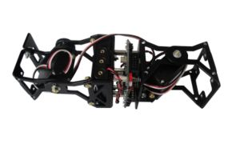
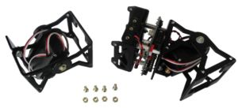
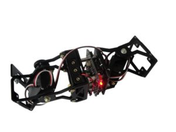

Unimod 2D de tipo B1 (click para ampliar)
Contenido
[ocultar]Introducción
Unimod 2D es el bloque mínimo que oscila en dos planos perpendiculares. Un módulo oscila horizontalmente y el otro verticalmente. Es el elemento mínimo a partir del cual construir robots del grupo cabeceo-viraje. Para su montaje son necesarios los siguientes elementos:
- Un Módulo MY1 montado (Instrucciones de montaje)
- Un Unimod de tipo B1 montado (Instrucciones de montaje)
- 4 tornillos M3 de 8 mm
- 4 tuercas
 Inicio: Piezas necesarias para montar UNIMOD-2D B1 (Click para ampliar) |
 Final: Unimod-2D B1 montado (Click para ampliar) |

Montaje
Pasos 1: Atornillar el Módulo MY1 a Unimod B1
|  1) Colocar el módulo MY1 y Unimod B1 en esas posiciones(Click para ampliar) |
 2) Unir el módulo MY1 con Unimod B1 (Click para ampliar) |
 3) Atornillar el módulo MY1 a Unimod B1(Click para ampliar) |
 4) Robot con los 4 tornillos y tuercas colocados (Click para ampliar) |

Pasos 2: Conectar el servo del Módulo MY1 a la Skycube
Conectar el servo del módulo a la Skycube. Se puede conectar en cualquiera de los conectores libres
| |
 1) Conectar el servo del módulo MY1 a la Skycube (Click para ampliar) |
 2) Unimod-2D B1 listo! (Click para ampliar) |

Fotos
| Álbum de fotos |
Enlaces
Noticias
- 19/Abril/2010: Primera version de esta página
- 16/Abril/2010: Comenzada esta página